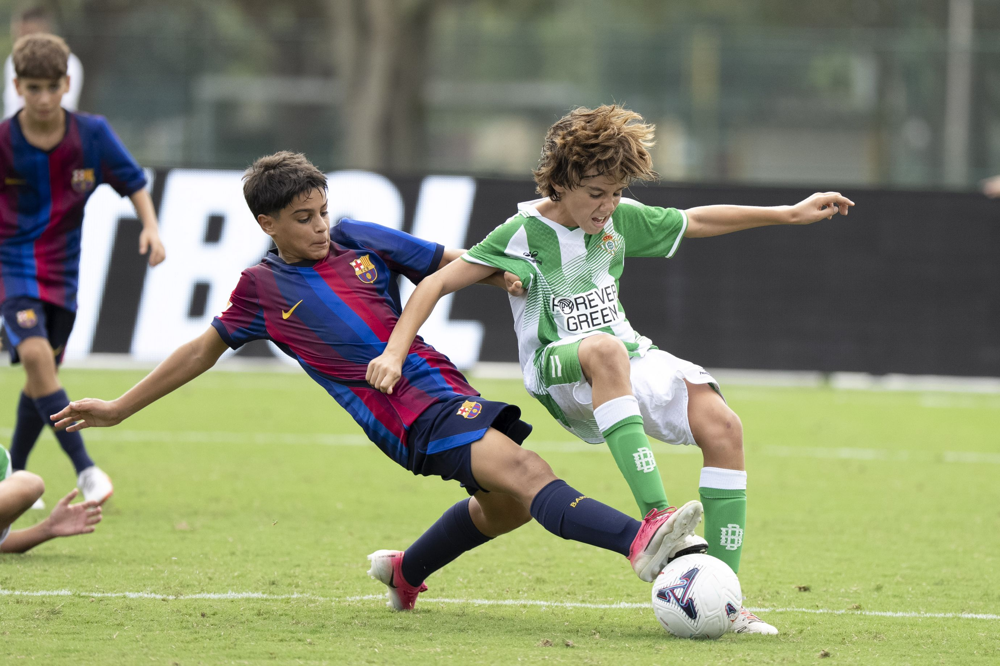

Informàtica
M'agrada el món de la informàtica. Vaig començar fa dos anys i ara mateix el meu dia a dia tant als estudis com a la feina està dirigit aquest tema.
Hola! Em dic Biel Muñoz, tinc 18 anys i visc a Manlleu. Actualment estic estudiant el cicle formatiu de grau superior de Desenvolupament d'Aplicacions Web.
M'agrada el món de la informàtica. Vaig començar fa dos anys i ara mateix el meu dia a dia tant als estudis com a la feina està dirigit aquest tema.

M'agrada jugar a futbol, jugo al Manlleu des de que era ben petit, penso que em fa desconnectar de tot i m'ajuda a fer una mica d'esport.
Tot i que penso que va per èpoques, els videojocs han sigut una part molt important per a mi, ja que molt de temps l'he dedicat a estar jugant amb els amics a diferents videojocs.